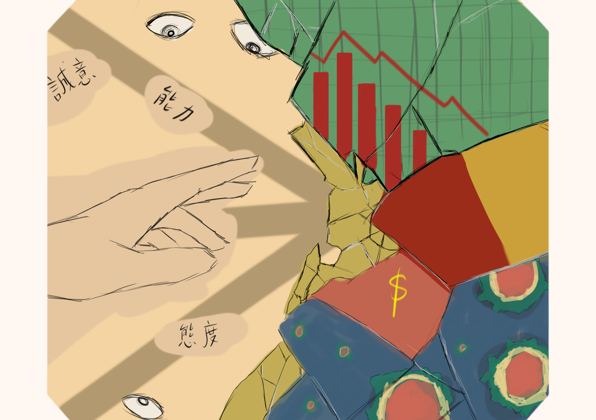

Life Story · Campus Years
《「陳」年往事，新的下一頁》
以下內容根據訪談整理，記下 Elaine 在校園工作中重新遇見學習、運動與生活的另一種可能。

1993年 · 校園工作
《另一種大學生活》
1993年，Elaine 加入香港科技大學擔任秘書，這一做，便是三十多年。年輕時未能如願享受的全日制大學生活，後來以另一種方式走近她。她以職員的身分走進校園，對學習的熱情則是從未減退。
辦公室裏，她向上司學習解決疑難，工餘時，她旁聽課程，更走進大學的體育館游泳和打網球，讓工作以外的日子充滿樂趣。談起這些機會，她滿懷感恩，覺得自己享用了不少學生都未必能享受的資源。
可是，校園的日子亦有風雨。亞洲金融危機期間，她經歷凍薪與減薪，沙士來襲，她與同事分組上班，在不安中適應防疫安排。
回望那些關卡，她記得當中的艱難，也記得日子終究一步步走過，這些一切磨練了她樂觀豁達的性格。她始終相信，無論難關多大，也終會過去。
信仰給她支持，校園則為她留下繼續探索的空間。當年的遺憾，漸漸與後來的滿足並存。這裏是她工作的地方，也是她另一種大學生活。
校園是她工作的地方，也是她重新探索世界的另一種大學生活